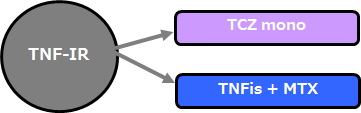

TNF-IRに対し、TCZ単独療法はTNF阻害薬+csDMARD併用療法と寛解達成率は同じで継続率は高い（MADACTA Study）
- TNF-IR RA患者に対するTCZ単独療法とTNF阻害薬+csDMARD併用療法の継続率比較: （EU10か国Registry、TOCERRAからの報告）
- ●１剤以上のTNF阻害薬で不応となったRA患者に対するTCZ単剤療法とTNF阻害薬+csDMARD併用療法の継続率を比較した
- ●EU10か国で構成されている TOCERRAレジストリーに2009年~2016年に登録された患者の中から、レトロスペクティブに症例を抽出
- ●TCZ単剤群（N=585）とTNF + csDMARD併用群（N=4163）で、TCZ群は有意に年齢が高く（57.8vs54.3）、罹病期間が長かった（9.7vs7.8）。
- ●患者背景を調整して解析を行った結果、治療脱落リスクはTCZ単剤群で有意に低値（ハザード比; R=0.71,p<0.001）。有効性は同等。
TOCERRA（EU10か国Registry）

※ LUNDEX: DAS28評価指標に、それぞれの時点におけるベースラインからの治療継続率を掛けたもの薬剤へのアドヒアランスを加味した治療成績を示す指標
１剤以上のTNF阻害薬で不応となったRA患者に対しては、TNF+MTXへスイッチよりも、TCZ-Monoにスイッチしたほうが有用
K. Lauper, et al. EULAR2017. # SAT0206